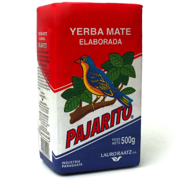

Recenzja: PAJARITO
Yerba Mate rozsławiła się na cały świat głównie
dzięki swojemu pozytywnemu wpływowi na ludzki
organizm - zarówno w sferze fizycznej, jak i
psychicznej. Przydatna okazuje się również w sferze
aktywności seksualnej. Czy to znaczy, że yerba
zmieni Cię w boga/boginię seksu?